Mao Zedong and Chiang Kaishek toast the victory over Japan, Chongqing, September 1945. Public domain, Wikimedia Commons.
Q8 story · Chongqing, Sichuan · 1938–1943
Japanese Bombers Hit Chongqing Again and Again from 1938 to 1943
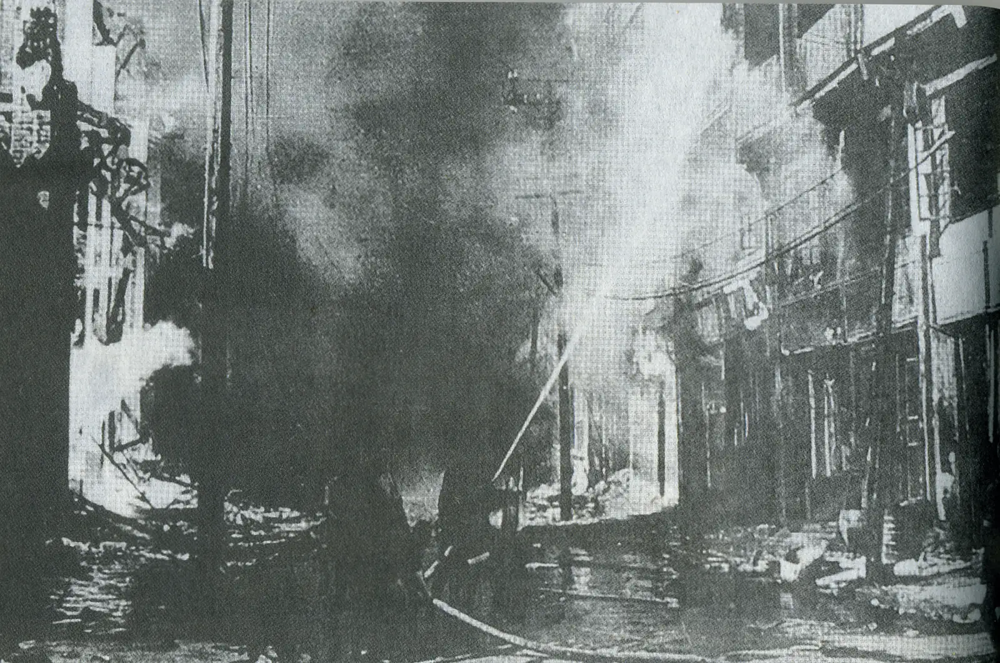
A street in Chongqing burns after a Japanese air raid, 1941. Public domain, Wikimedia Commons.
The Nationalist government moved to Chongqing, deep in Sichuan, in 1938.
Japanese planes bombed the city for five years, mostly in the clear summer months.
In May 1939 two days of raids killed thousands.
People lived in air-raid tunnels dug into the city's rock cliffs.
Sources: Ebrey, Ch. 25, pp. 450–451; Rana Mitter, Forgotten Ally (2013); Lee McIsaac, "The City as Nation," in Remaking the Chinese City, ed. Joseph Esherick (2000). Image: Chongqing, 1941.
Q8 story · Free China · 1939–1945
Prices Rose Up to 10 Percent a Month, and Officials' Pay Became Worthless
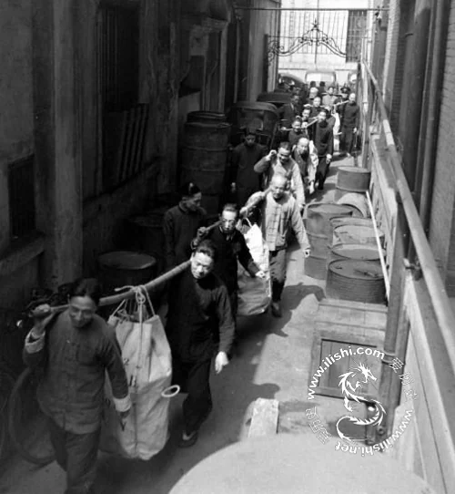
Porters carry sacks of banknotes from a bank in the 1940s. Public domain, Wikimedia Commons.
The government lost the coastal cities that had paid most of its taxes.
It printed money to pay for the war.
Prices rose by as much as 10 percent a month.
Officials and teachers, paid in paper money, turned to corruption or went hungry.
Sources: Ebrey, Ch. 25, p. 451; Lloyd E. Eastman, Seeds of Destruction (1984). Image: 1940s.
Q8 story · Free China · 1939–1945
Press Gangs Took Peasants for the Army, and Many Died Before They Reached It
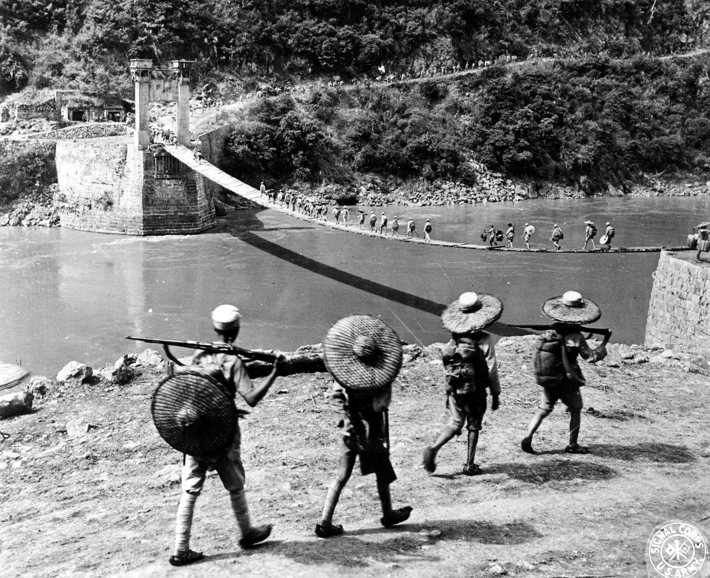
Chinese soldiers carry supplies to the front across the Salween River, Yunnan, July 1944. U.S. Army Signal Corps. Public domain, Wikimedia Commons.
Chiang's trained army had been destroyed at Shanghai and Wuhan.
From 1939 most of China's 5 million soldiers were peasant conscripts.
Press gangs seized able-bodied men from villages.
Ebrey writes that as many as a third died on the way to their units.
Sources: Ebrey, Ch. 25, p. 451; Mitter, Forgotten Ally (2013); Eastman, Seeds of Destruction (1984). Image: Yunnan, 1944.
Q8 story · Free China · 1937–1942
Factories Moved Inland, but Bombs and Lost Supply Routes Starved Them
In 1937–1938 hundreds of factories were carried inland by boat and on men's backs.
Japanese bombing hit them again in Sichuan.
Soviet aid dwindled after 1939.
In 1942 Japan took Burma and cut the Burma Road, China's last land route.
Sources: Ebrey, Ch. 25, p. 451; William C. Kirby, "The Chinese War Economy," in China's Bitter Victory, ed. James C. Hsiung and Steven I. Levine (1992). Image: 1940.
Q8 story · India to Yunnan · 1942–1945
American Planes Flew Supplies over the Himalayas from India
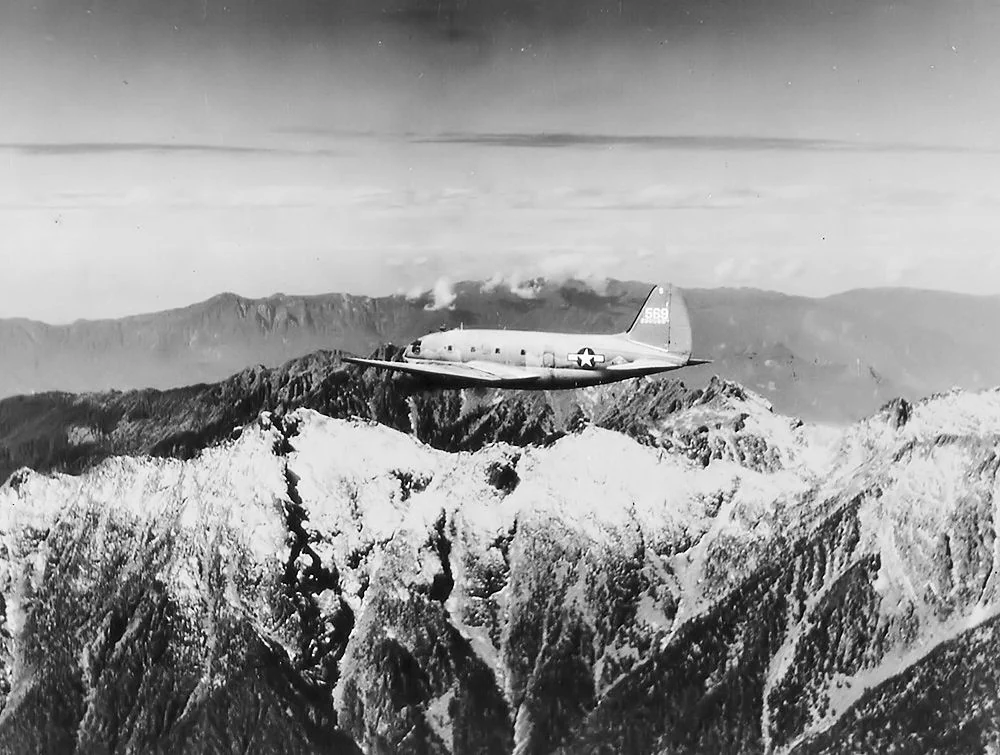
An American C-46 transport flying "the Hump" over the Himalayas, 1944–1945. U.S. Air Force. Public domain, Wikimedia Commons.
After 1942 China's only supply route was by air.
American planes flew from Assam, in India, over the mountains to Kunming.
Pilots called the route "the Hump"; hundreds of planes crashed.
American aid built some modern divisions, but not an army to drive Japan out.
Sources: Ebrey, Ch. 25, p. 451; Mitter, Forgotten Ally (2013); Barbara Tuchman, Stilwell and the American Experience in China (1971). Image: 1944–1945.
Q8 story · Washington and Cairo · 1943
Soong Meiling Won Over Congress, and Roosevelt Made China One of the Big Four
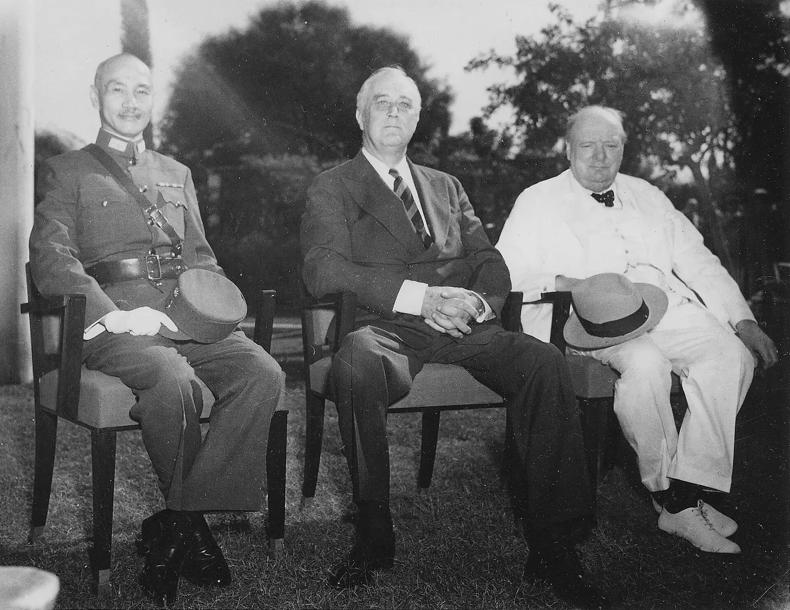
Chiang Kaishek, Franklin D. Roosevelt, and Winston Churchill at the Cairo Conference, 25 November 1943. Public domain, Wikimedia Commons.
After Pearl Harbor, the United States became China's main ally.
In 1943 Soong Meiling addressed the U.S. Congress and toured America.
Britain and America gave up their extraterritorial rights in China in 1943.
At Cairo in November 1943 Chiang met Roosevelt and Churchill as an equal.
Sources: Ebrey, Ch. 25, p. 451; Mitter, Forgotten Ally (2013); Hannah Pakula, The Last Empress: Madame Chiang Kai-shek (2009). Image: Cairo, 1943.
Q8 story · Southern Anhui · January 1941
In January 1941 Nationalist Troops Attacked the Communist New Fourth Army
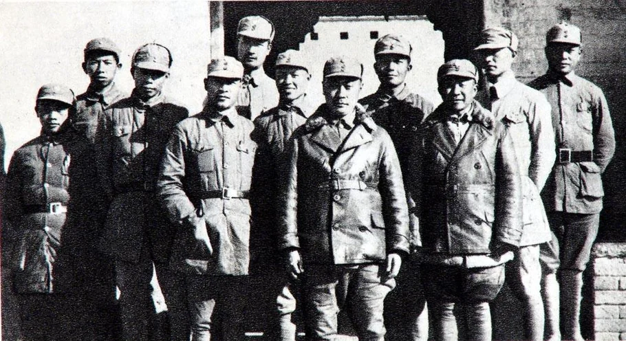
Chen Yi (seventh from left), the new commander of the rebuilt New Fourth Army, inspects one of its brigades, November 1941. Public domain, Wikimedia Commons.
At first the two parties cooperated against Japan.
Both used the war to expand their own territory.
In January 1941 Nationalist troops ambushed the New Fourth Army headquarters.
After that the Nationalists blockaded the Communist base area.
Sources: Ebrey, Ch. 25, p. 451; Gregor Benton, New Fourth Army (1999). Image: 1941.
Q8 story · Yan'an, Shaanxi · 1937–1945
100,000 People Walked to Yan'an, and the Party Grew from 40,000 to Over a Million
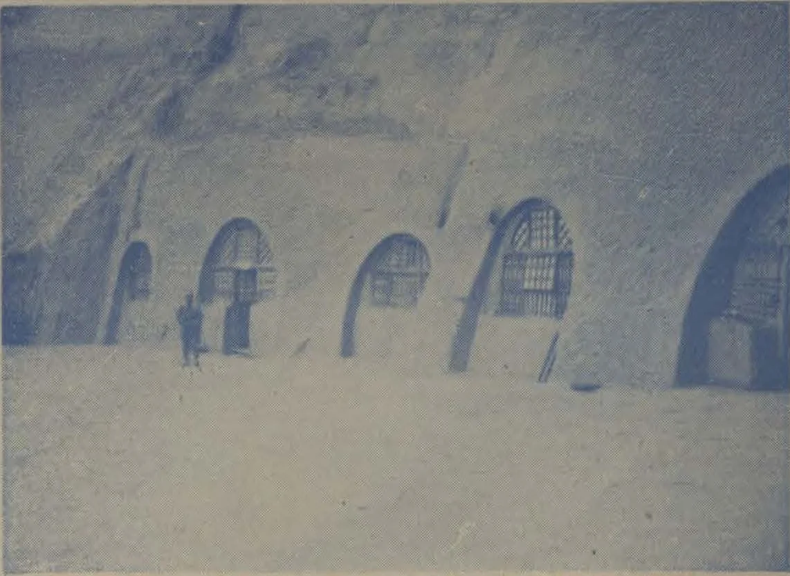
Cave dormitories of the Anti-Japanese Military and Political University (Kangda) in Yan'an, 1938. Public domain, Wikimedia Commons.
About 100,000 people made their way to Yan'an during the war.
About half were students, teachers, and writers.
Party schools such as Kangda trained them in caves like these.
Party membership grew from about 40,000 in 1937 to 1.2 million by 1945.
Sources: Ebrey, Ch. 25, p. 451; Mark Selden, China in Revolution: The Yenan Way Revisited (1995); Tony Saich, From Rebel to Ruler (2021). Image: Yan'an, 1938.
Q8 story · North China base areas · 1937–1945
Communist Troops Helped Bring In the Harvest, and Taxes Fell on the Rich
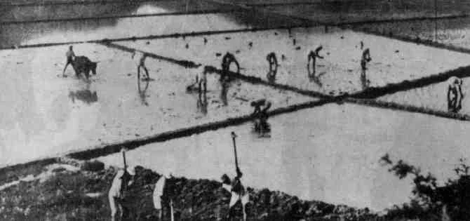
Soldiers of the Eighth Route Army farm the valley of Nanniwan, near Yan'an, in the early 1940s. AI-enhanced from a public-domain original, Wikimedia Commons.
Behind Japanese lines, peasants were ready to fight.
Communist troops did not steal crops and helped with the harvest.
Graduated taxes and rent cuts pushed big landlords to sell land.
Landlords were invited to help, and class struggle was played down.
Sources: Ebrey, Ch. 25, p. 451; Chalmers Johnson, Peasant Nationalism and Communist Power (1962); Chen Yung-fa, Making Revolution (1986). Image: early 1940s.
Q8 story · Yan'an and the base areas · 1937–1945
"Under the Nationalists, Too Many Taxes; Under the Communists, Too Many Meetings"
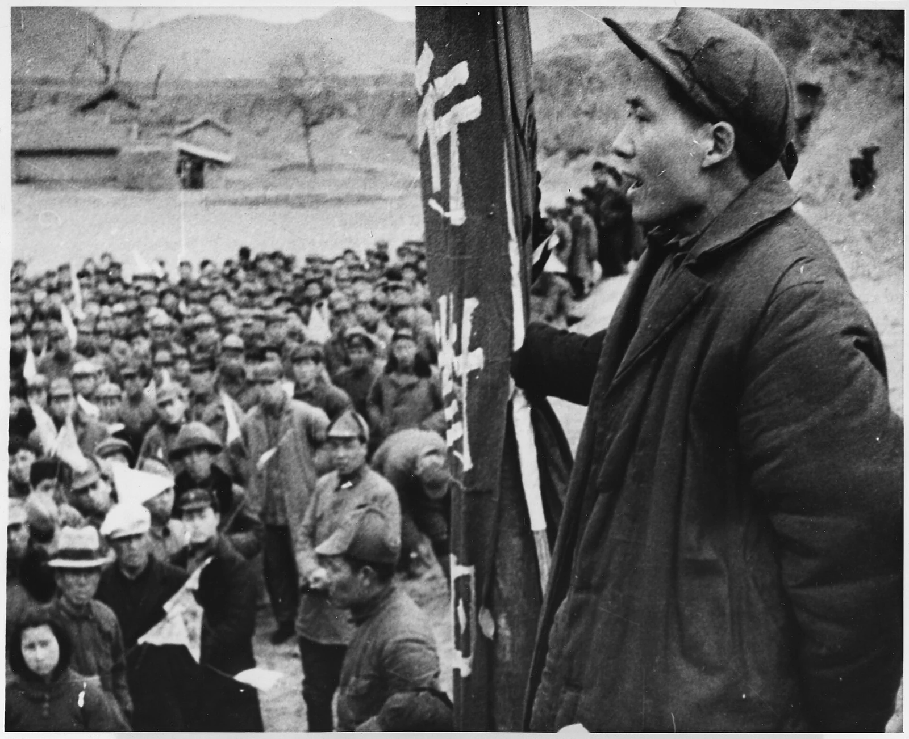
Mao addresses a crowd in Yan'an, 6 December 1944. U.S. National Archives. Public domain, Wikimedia Commons.
Party workers organized peasants into militias, unions, and women's groups.
They held meeting after meeting to explain the party's goals.
Propaganda stirred patriotism and promised a fairer future.
Villagers in Hebei joked about the meetings.
Sources: Ebrey, Ch. 25, p. 451; Edward Friedman, Paul G. Pickowicz, and Mark Selden, Chinese Village, Socialist State (1991). Image: Yan'an, 1944.
Reading Guide · Review Question 8
Reading Guide · Review Question 8
Review Question 8
How did the wartime experiences of the Nationalists in Chongqing differ from those of the Communists in Yan'an?
Concept: Mao Made Peasants, Not Factory Workers, the Heart of the Revolution
Concept
Mao Zedong Thought
Mao's version of Marxism-Leninism, "adapted to Chinese conditions." It made peasants the main force of the revolution, told cadres to learn from the masses before leading them (the "mass line"), and held that people with the right will could transform themselves and their world.
Marx and Lenin expected revolution from city workers, not peasants.
Mao made the peasants the vanguard of China's revolution.
The mass line: go among the masses, learn from them, then lead them.
Will and ideas, not only economics, could change history.
Sources: Ebrey, Ch. 25, pp. 451–452; Stuart R. Schram, The Thought of Mao Tse-tung (1989).
Q9 story · Yan'an · 1937–1938
Mao Outmaneuvered the Moscow-Trained Leaders, and the Cult of Mao Began
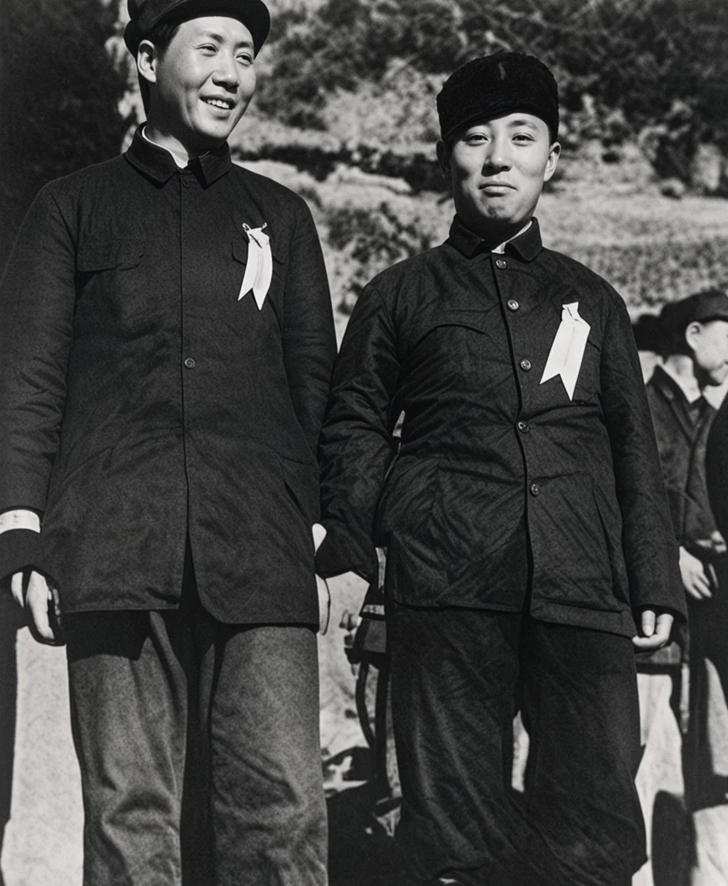
Mao Zedong and Wang Ming in Yan'an, 1937. AI-enhanced from a public-domain original, Wikimedia Commons.
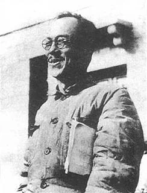
Kang Sheng, the party's security chief, in Yan'an, 1940s. AI-enhanced from a public-domain original, Wikimedia Commons.
In November 1937 Wang Ming flew in from Moscow with Stalin's backing.
Mao studied Marxist theory and had his secretary present him as a thinker.
In 1938 the party leaders confirmed Mao as their head.
His portrait and his collected writings began to appear.
Names in This Story
Wang MingChen Shaoyu, Moscow-trained party leader, 1904–1974; pronounced "wahng ming"
Kang Shenghead of party security in Yan'an, 1898–1975; pronounced "kahng shung"
Sources: Ebrey, Ch. 25, pp. 447–448, 452; Gao Hua, How the Red Sun Rose (2018); Raymond F. Wylie, The Emergence of Maoism (1980). Images: 1937; 1940s.
Q9 story · Yan'an · 1942–1944
In 1942 Every Cadre Studied Mao's Texts, Criticized Himself, and Confessed
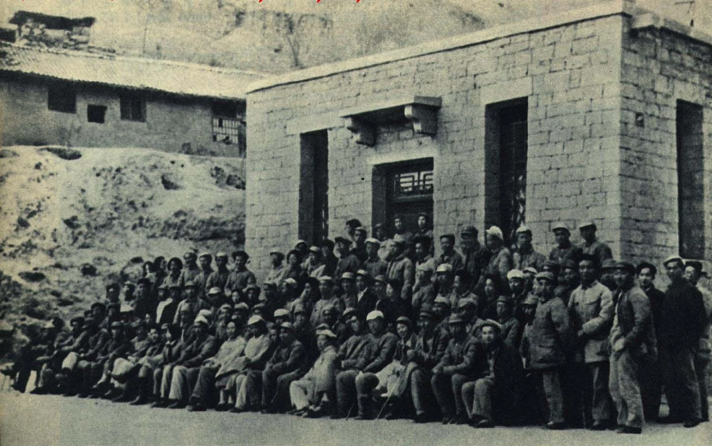
Mao and the writers and artists of the Yan'an Forum on Literature and Art, May 1942. Photograph by Wu Yinxian. Public domain, Wikimedia Commons.
In 1942 Mao launched the first rectification campaign.
Cadres studied Mao's texts in small groups and criticized themselves.
Targets were humiliated at mass struggle sessions.
The writer Wang Shiwei, who criticized party privilege, was jailed and later executed.
Sources: Ebrey, Ch. 25, pp. 446–447, 452; Gao Hua, How the Red Sun Rose (2018); David E. Apter and Tony Saich, Revolutionary Discourse in Mao's Republic (1994). Image: Yan'an, May 1942.
Q9 story · Yan'an · April–June 1945
In 1945 the Party Made "Mao Zedong Thought" Its Guide
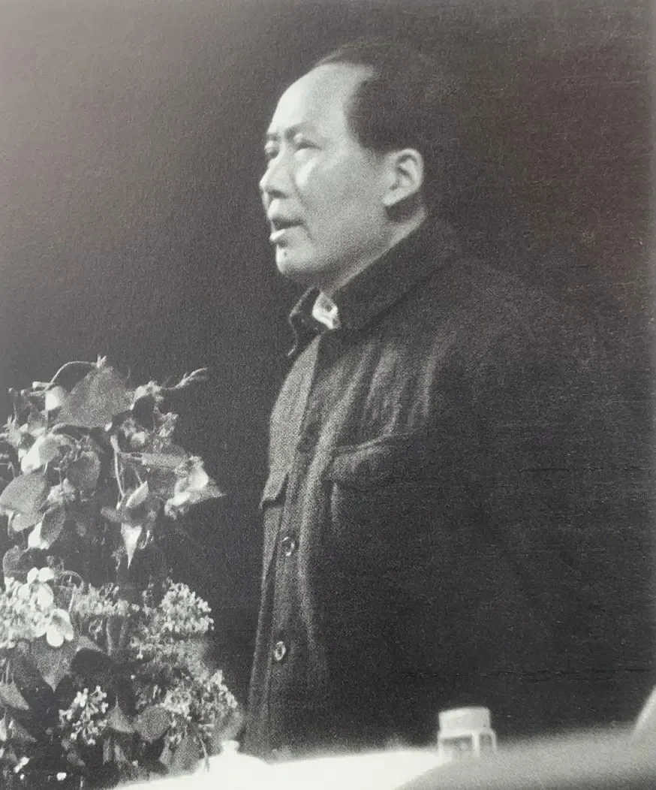
Mao gives the closing speech at the Seventh Party Congress, Yan'an, June 1945. Public domain, Wikimedia Commons.
The Seventh Party Congress met in Yan'an in the spring of 1945.
It was the first full congress since 1928.
The new party constitution named Mao Zedong Thought as its guide.
Many members truly believed; others learned to watch what they said.
Sources: Ebrey, Ch. 25, p. 452; Saich, From Rebel to Ruler (2021). Image: Yan'an, 1945.
Reading Guide · Review Question 9
Reading Guide · Review Question 9
Review Question 9
How did Mao use the Yan'an rectification campaigns to strengthen ideological control within the Communist Party?
Japan Surrendered in 1945 with Two Million Troops Still in China
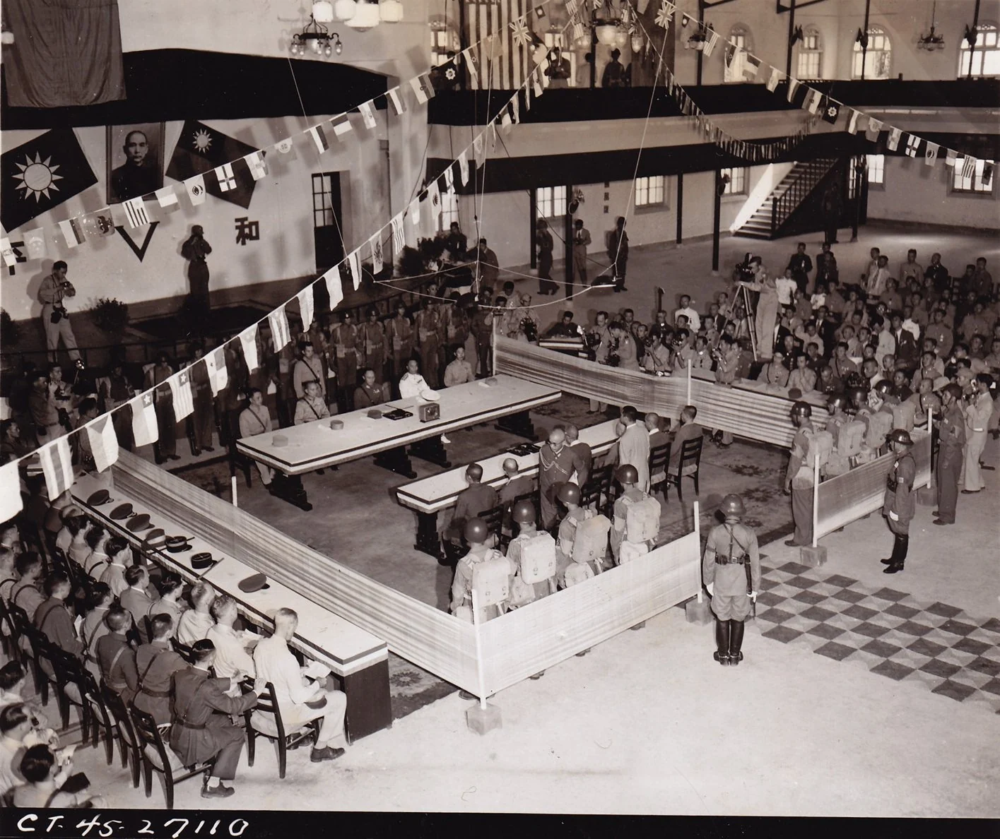
The Japanese surrender ceremony in Nanjing, 9 September 1945, seen from the gallery. Public domain, Wikimedia Commons.
Japan surrendered in August 1945, after the atomic bombs and the Soviet attack.
More than a million Japanese troops were in China, and nearly a million more in Manchuria.
Both Chinese parties raced to take their weapons and territory.
American planes and ships moved Nationalist troops to the eastern cities.
Sources: Ebrey, Ch. 25, pp. 452–453; Odd Arne Westad, Decisive Encounters (2003). Image: Nanjing, 1945.
Q10 story · Manchuria · August 1945–1946
Soviet Troops in Manchuria Let Japanese Arms Reach the Communists
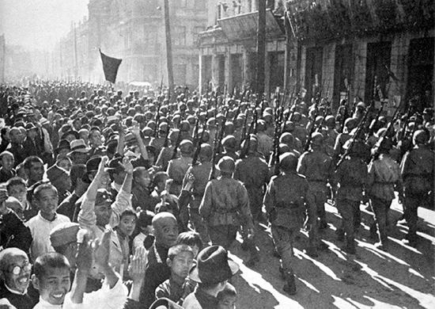
Soviet troops enter Harbin, 21 August 1945. CC BY 4.0, Wikimedia Commons.
On 9 August 1945 Soviet armies invaded Manchuria, as Stalin had promised at Yalta.
They saw that Japanese weapons reached the Communists.
The Communists rushed about 100,000 troops into Manchuria.
The Soviets also carried off much of Manchuria's industrial machinery.
Sources: Ebrey, Ch. 25, p. 453; Westad, Decisive Encounters (2003); Steven I. Levine, Anvil of Victory (1987). Image: Harbin, 1945.
Q10 story · Chongqing and Yan'an · 1945–1947
Mao Flew to Chongqing in 1945, and Marshall Tried for a Year to Make Peace
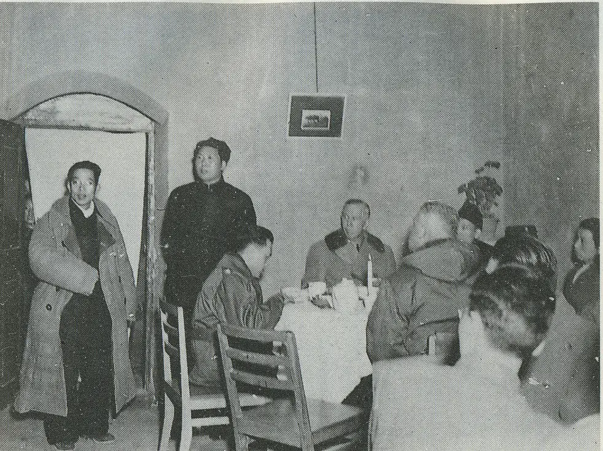
Mao Zedong and General George C. Marshall in Yan'an, 1946. Public domain, Wikimedia Commons.
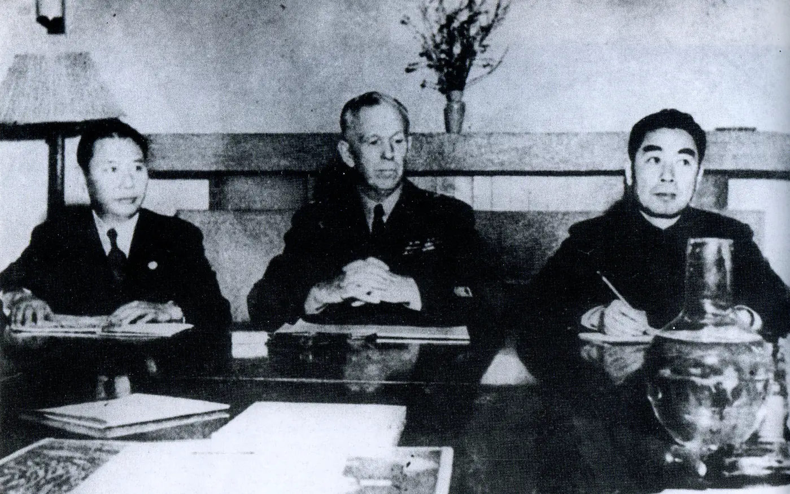
The "Committee of Three" for peace: Zhang Zhizhong for the Nationalists, Marshall, and Zhou Enlai for the Communists, 1946. Public domain, Wikimedia Commons.
In August 1945 the U.S. ambassador brought Mao to Chongqing for six weeks of talks.
They agreed to avoid civil war, but fighting went on.
In December 1945 Truman sent General George Marshall to make peace.
A ceasefire in 1946 broke down, and Marshall went home in January 1947.
Full War Broke Out in 1946, and the PLA Surrounded the Cities from the Countryside
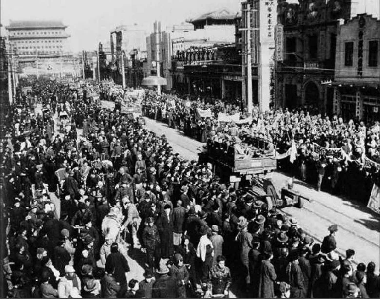
The People's Liberation Army enters Beiping (Beijing), 31 January 1949, the end of the strategy of surrounding the cities. Public domain, Wikimedia Commons.
In June 1946 Nationalist armies attacked the Communist areas; full war began.
At first they won; in March 1947 they even took Yan'an.
The People's Liberation Army (PLA) avoided defending territory and cut off the cities.
Nationalist soldiers defected with their weapons, and the PLA kept growing.
Sources: Ebrey, Ch. 25, pp. 453–454; Westad, Decisive Encounters (2003); Suzanne Pepper, Civil War in China (1978). Image: Beiping, 1949.
Q10 story · Near Xuzhou · November 1948–January 1949
Near Xuzhou in 1948, Chiang Lost Nearly Half a Million Men
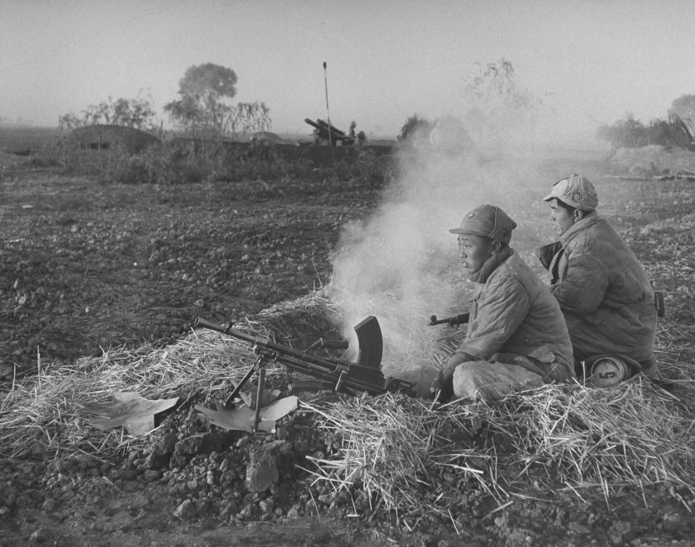
Nationalist machine gunners at the front during the Huaihai campaign, November 1948. Public domain, Wikimedia Commons.
In November 1948 the decisive battle began near the railway center of Xuzhou.
About 600,000 Nationalist troops faced an equal number of Communists.
Chiang had air support, but his armies were surrounded and destroyed.
He lost almost half a million men, and the road to the Yangzi lay open.
By 1948 Prices Were 3 Million Times Their 1937 Level
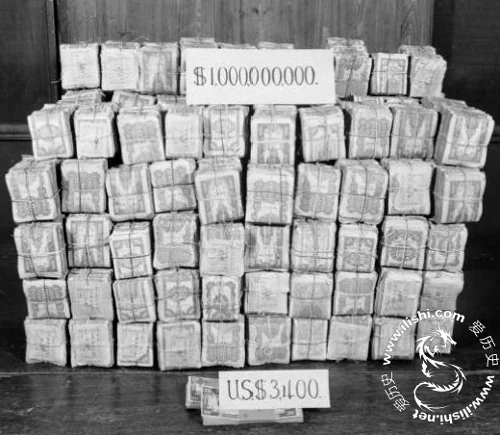
A pile of Chinese banknotes with a face value of one billion dollars, labeled as worth a few thousand U.S. dollars, late 1940s. Public domain, Wikimedia Commons.
Prices in July 1948 were 3 million times those of July 1937.
In August 1948 a new "gold yuan" currency collapsed within months.
People turned to barter; a tenth of the population were refugees.
The middle class that had supported Chiang was ruined.
Sources: Ebrey, Ch. 25, p. 453; Pepper, Civil War in China (1978); Eastman, Seeds of Destruction (1984). Image: late 1940s.
Q10 story · Kunming and Nationalist cities · 1945–1948
Soldiers Looted, Students Were Beaten, and Liberal Critics Were Shot
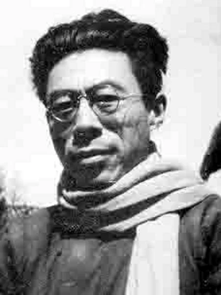
Wen Yiduo, poet and professor, assassinated in Kunming in July 1946. Public domain, Wikimedia Commons.
Nationalist officers and soldiers were seen as taking whatever they could.
Police and soldiers broke up student protests by force.
In July 1946 secret police agents shot two liberal critics in Kunming.
Many educated Chinese gave up on the government.
Names in This Story
Wen Yiduopoet and professor, 1899–1946; pronounced "wun yee-dwaw"
Li Gongpudemocratic activist, 1902–1946; pronounced "lee gong-poo"
Sources: Ebrey, Ch. 25, p. 453; Pepper, Civil War in China (1978); Edmund S. K. Fung, In Search of Chinese Democracy (2000). Image: 1940s.
Reading Guide · Review Question 10
Reading Guide · Review Question 10
Review Question 10
Why did the Nationalist government lose the Chinese Civil War despite its advantages in troops and military equipment?
In December 1949 Chiang Flew to Taiwan, and the Nationalists Ruled Only the Island
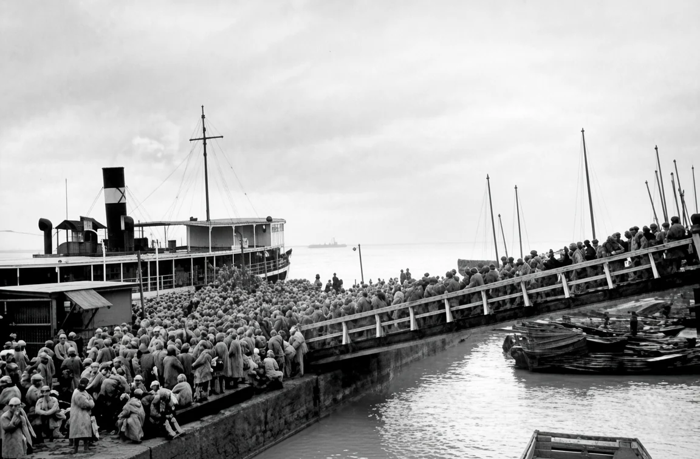
Nationalist soldiers board a ship bound for Taiwan, 1949. AI-enhanced from a public-domain original, Wikimedia Commons.
In January 1949 Chiang resigned as president but kept control of the army and the gold reserves.
The PLA crossed the Yangzi in April 1949 and took Nanjing and Shanghai.
More than a million soldiers and civilians followed the government to Taiwan.
On 10 December 1949 Chiang flew from Chengdu to Taiwan; he never returned.
Sources: Ebrey, Ch. 25, p. 453; Jay Taylor, The Generalissimo (2009); Dominic Meng-Hsuan Yang, The Great Exodus from China (2021). Image: 1949.
Looking back · 1927 and 1949
China in 1949 Was Not the China of 1927
Japan's long push into China was over; Japan had been defeated.
The Nationalists had lost the mainland and withdrawn to Taiwan.
The Communist Party had broken free of Moscow and tied itself to the peasants.
Mao led a huge party skilled at land reform, mass organizing, and controlling intellectuals.
Sources: Ebrey, Ch. 25, p. 454.
Coming up · Chapter 27
Next: On 1 October 1949 Mao Proclaimed the People's Republic of China
Mao proclaims the People's Republic of China from the Gate of Heavenly Peace (Tiananmen), Beijing, 1 October 1949. Public domain, Wikimedia Commons.
On 1 October 1949 Mao stood on the Gate of Heavenly Peace in Beijing.
He proclaimed the founding of the People's Republic of China.
The next lectures follow how the party ruled · Ch. 27 L1 ↗
Sources: Ebrey, Ch. 25, p. 454. Image: Beijing, 1949.
Pierian Spring · Required Independent Study
Today's lecture ends here. Continue on your own: two short stories from wartime Yan'an, about the actress who married Mao and the American officers who flew in to meet him.
"A little learning is a dang'rous thing; Drink deep, or taste not the Pierian spring."Alexander Pope, An Essay on Criticism, 1711
Pierian Spring · Yan'an · 1937–1940
An Actress from Shanghai, Jiang Qing, Came to Yan'an and Married Mao
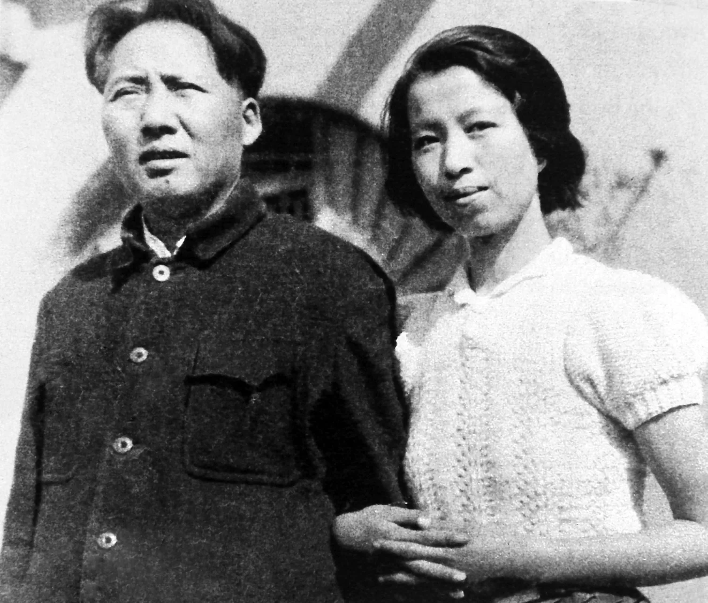
Mao Zedong and Jiang Qing in Yan'an, about 1940. Public domain, Wikimedia Commons.
Jiang Qing had been a film and stage actress in Shanghai.
She reached Yan'an in 1937, after Japan invaded.
He Zizhen had gone to the Soviet Union for treatment; Mao married Jiang Qing in 1938.
Thirty years later she would lead the Cultural Revolution.
Sources: Ebrey, Ch. 25, p. 448; Ross Terrill, Madame Mao (rev. ed. 1999). Image: Yan'an, about 1940.
Pierian Spring · Yan'an · 1944–1947
In 1944 American Officers Flew to Yan'an and Liked What They Saw
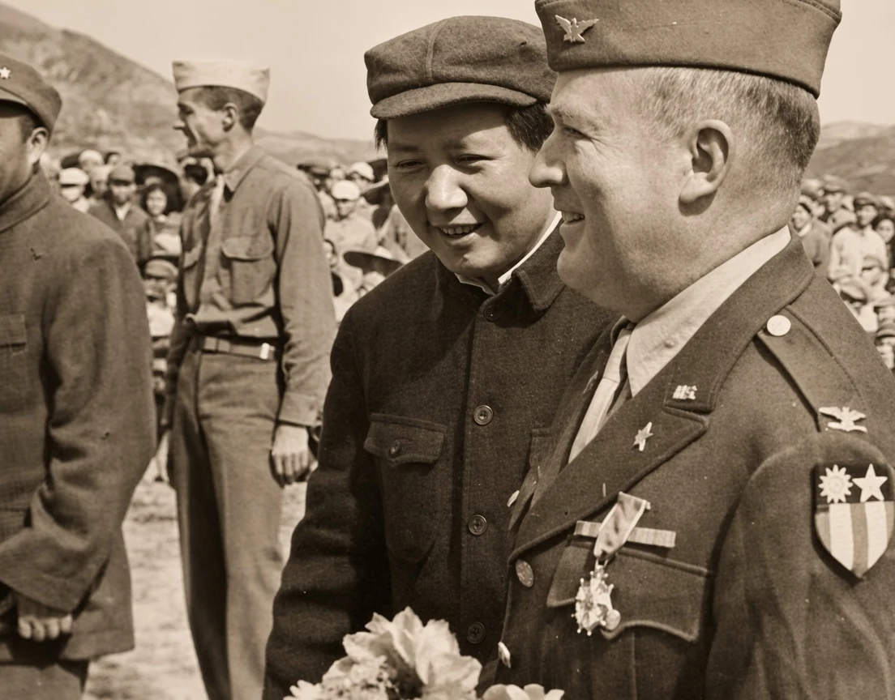
Colonel David Barrett, commander of the U.S. Army Observation Group, with Mao in Yan'an, 1944. AI-enhanced from a public-domain original, Wikimedia Commons.
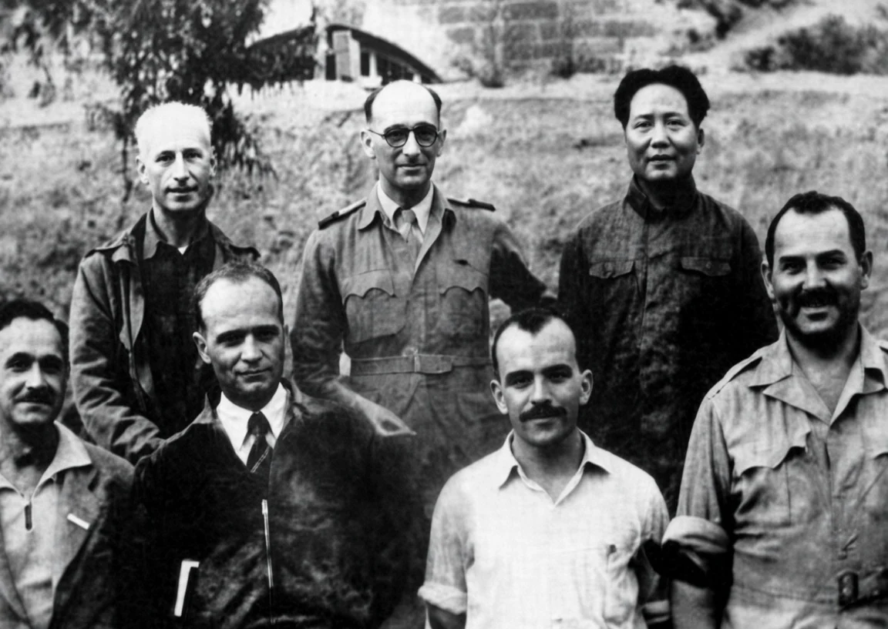
Mao with visiting foreign journalists in Yan'an, June 1944. AI-enhanced from a public-domain original, Wikimedia Commons.
In 1944 journalists and then American officers were allowed into Yan'an.
The U.S. Army Observation Group, nicknamed the Dixie Mission, arrived in July.
Diplomats such as John S. Service praised the Communists' honesty and energy.
Their reports later cost them their careers in the anti-Communist 1950s.
Sources: Ebrey, Ch. 25, pp. 447, 451; Carolle J. Carter, Mission to Yenan (1997); John S. Service, Lost Chance in China, ed. Joseph W. Esherick (1974). Images: Yan'an, 1944.
Sources and image credits
The Stories in This Deck Rest on These Sources
Main source
Patricia Buckley Ebrey, A History of China, Chapter 25, "War and Revolution, China (1927–1949)," pp. 447–448 and 450–454. All page references in this deck are to these pages.
Further reading beyond Ebrey
Rana Mitter, Forgotten Ally (2013) (slides b, d, f, g, t). Lee McIsaac, "The City as Nation," in Remaking the Chinese City, ed. Joseph W. Esherick (2000) (slide b). Lloyd E. Eastman, Seeds of Destruction (1984) (slides c, d, w). William C. Kirby, "The Chinese War Economy," in China's Bitter Victory, ed. James C. Hsiung and Steven I. Levine (1992) (slide e). Barbara Tuchman, Stilwell and the American Experience in China (1971) (slide f). Hannah Pakula, The Last Empress (2009) (slide g). Gregor Benton, New Fourth Army (1999) (slide h).
Mark Selden, China in Revolution: The Yenan Way Revisited (1995) and Tony Saich, From Rebel to Ruler (2021) (slides i, p). Chalmers Johnson, Peasant Nationalism and Communist Power (1962) and Chen Yung-fa, Making Revolution (1986) (slide j). Edward Friedman, Paul G. Pickowicz, and Mark Selden, Chinese Village, Socialist State (1991) (slide k). Stuart R. Schram, The Thought of Mao Tse-tung (1989) (slide m). Gao Hua, How the Red Sun Rose (2018) (slides n, o). Raymond F. Wylie, The Emergence of Maoism (1980) (slide n). David E. Apter and Tony Saich, Revolutionary Discourse in Mao's Republic (1994) (slide o).
Odd Arne Westad, Decisive Encounters (2003) (slides r–v). Steven I. Levine, Anvil of Victory (1987) (slide s). Suzanne Pepper, Civil War in China (1978) (slides u, w, x). Edmund S. K. Fung, In Search of Chinese Democracy (2000) (slide x). Jay Taylor, The Generalissimo (2009) and Dominic Meng-Hsuan Yang, The Great Exodus from China (2021) (slide z). Ross Terrill, Madame Mao (rev. ed. 1999) (slide dd). Carolle J. Carter, Mission to Yenan (1997) and John S. Service, Lost Chance in China, ed. Joseph W. Esherick (1974) (slide ee).
Images (real, via Wikimedia Commons)
a: Chongqing, 1945. b: Chongqing, 1941. c: 1940s. d: U.S. Army Signal Corps, Yunnan, 1944. e: 1940. f: U.S. Air Force, 1944–1945. g: Cairo, 1943. h: 1941. i: Yan'an, 1938. j: early 1940s. k: U.S. National Archives, 1944. n: 1937; 1940s. o: Wu Yinxian, 1942. p: 1945. Public domain unless noted.
r: Nanjing, 1945. s: Harbin, 1945 (CC BY 4.0). t: 1946. u: Beiping, 1949. v: 1948. w: late 1940s. x: 1940s. z: 1949. bb: Beijing, 1949. dd: Yan'an, about 1940. ee: Yan'an, 1944. Public domain unless noted.
AI-enhanced: the photographs on slides j, n, z, and ee were sharpened and upscaled with AI image generation from the public-domain Wikimedia Commons originals credited above; small details, especially faces, may differ from the originals.